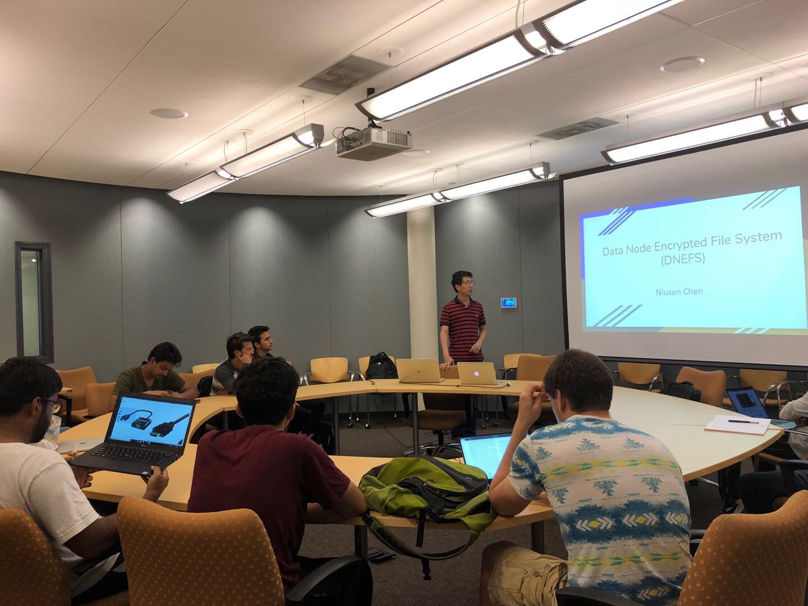
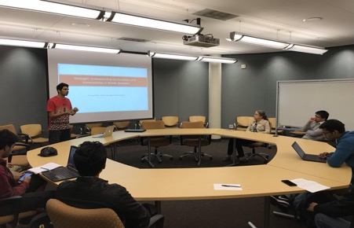
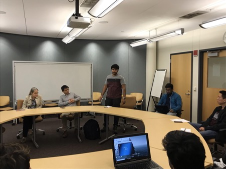
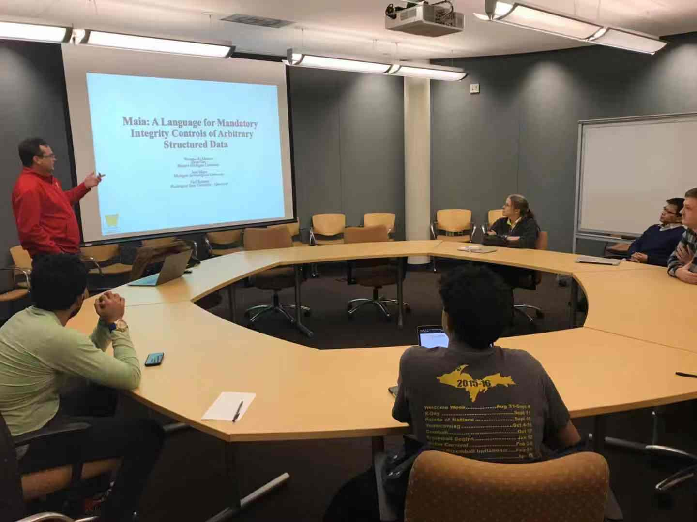
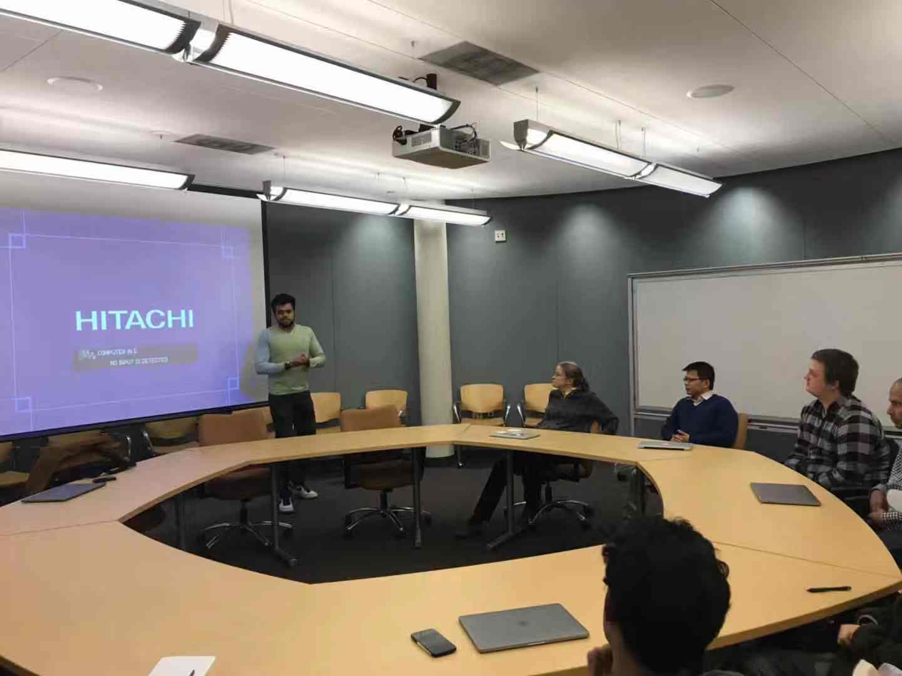

Fall 2018 CS Cyber Security Reading Group
Members: Ajay Vasu, Anil Silwal, Bo Chen (co-advisor), Fei Peng, Jean Mayo (co-advisor), Joseph Rice, Joshua Marshall, Kapil Dahal, Karan Sunchanakota, Kevin Lobo, Manu Nandan Chemudupati, Niusen Chen, Sandeep Battula, Siva Krishna Kakula, Sophia Farquhar, Vishnu Kamaraju, Yuchen Wang





Detailed schedule:
Time: 4:00 – 5:00pm Friday, Sept 14, 2018
Location: Rekhi 101
Presenter: Niusen Chen
Title: Data Node Encrypted File System: Efficient Secure Deletion for Flash Memory
Abstract:
Flash memory is widely used in modern mobile computing devices. However, due to its special nature (e.g., erase before write, out of place update), traditional secure deletion approaches for HDDs cannot directly work for flash memory. The paper introduces a new strategy called Data Node Encrypt File System (DNEFS) to securely delete user data in flash memory. Its main ideas include,
1) Encrypt each data node with a unique key.
2) Co-locate the keys in a condense key storage area.
3) Periodically purge the key storage area to remove keys for the deleted data.
They implement DNEFS and integrate it into UBIFS. Their experimental evaluation justifies feasibility of DNEFS.
Time: 4:00 – 5:00pm Friday, Sept 28, 2018
Location: Rekhi 101
Presenter: Manu Nandan Chemudupati
Title: Hindsight: Understanding the Evolution of UI Vulnerabilities in Mobile Browsers
Abstract:
Mobile web security has not received enough attention from the community. In particular, there is no longitudinal study that investigates evolution of mobile browser vulnerabilities using a diverse set of browsers that are available out there. To bridge this gap, the paper designs and implements a browser-agnostic testing framework called Hindsight, which can test framework automatically and evaluate their vulnerabilities. They test a number of browsers by using Hindsight and detect that a vast majority of mobile browsers are vulnerable to one or more attacks and they seem to be less secure as years go by.
In addition to the presentation by Manu, an alumnus of the cybersecurity reading group Shashank Munnooru was invited to share his experience during his 2018 summer intern in Schneider. He introduced his projects during his intern job and provided insightful suggestions on how to network with potential employers and successfully obtain an intern position.
Time: 4:00 – 5:00pm Friday, Oct. 26, 2018
Location: Rekhi 101
Presenter: Prof. Steven Carr (Western Michigan University)
Title: Maia: A Language for Mandatory Integrity Controls of Structured Data
Abstract:
The integrity of systems files is necessary for the secure functioning of an operating system. Integrity is not generally discussed in terms of complete computer systems. Instead, integrity issues tend to be either tightly coupled to a particular domain (e.g. database constraints), or else so broad as to be useless except after the fact (e.g. backups). Often, file integrity is determined by who modifies the file or by a checksum. In this talk, Steven described a language called Maia that provides a means to specify what the contents of a valid file should be. Maia can be used to specify the format and valid properties of system configuration files, PNG files and others. Steven gave a structural operational semantics of Maia and discussed an initial implementation within a mandatory integrity system.
Additionally, CS MS student Rahul Javadekar was invited to the reading group to share experience in his 2018 Summer intern. Rahul talked about his projects during his intern. Also, he shared with all the group members some valuable experience on how to successfully obtain an intern position in a big company, including how to well prepare a resume to obtain the interview opportunity, and how to impress the interviewers by always showing a positive attitude towards the job position.
Time: 4:00 – 5:00pm Friday, Nov. 9, 2018
Location: Rekhi 101
Presenter: Prof. Bo Chen
Title: Towards Data Protection in Flash-based Solid State Storage
Abstract:
Modern mobile computing devices usually use flash memory as external storage. Compared to traditional hard drive devices, flash memory has some special properties, such as out-of-place update, supporting a finite number of program-erase (P/E) cycles. These properties bring additional challenges when protecting data in flash memory. In this talk, Prof. Chen first gave a brief view of the flash memory background and pointed out a few practical problems relevant to flash memory security. He introduced recent research of his research group on protecting data stored in flash memory, including secure deletion, deniable encryption, as well as data recovery from malware analysis.
Time: 4:00 – 5:00pm Friday, Nov. 30, 2018
Location: Rekhi 101
Presenter: Joseph Rice
Title: Intel Management Engine
Abstract:
Intel Management Engine (ME) is a hardware chip embedded on Intel motherboards in addition to the main processor. ME has access to the CPU and to the dynamic random-access memory. In this talk, Joe discussed security issues for Intel Management Engine. He first gave a brief view of Intel Management Engine, including where ME locates and what kind of services ME can support. Then, he talked about some problems for security and privacy of ME such as software bugs, difficult to patch and lowest level rootkits. At the end of the presentation, he discussed a few options to disable the ME.